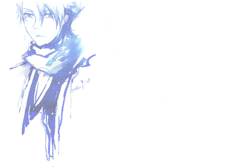

《BLEACH》（原意“漂白”，片假名：ブリーチ）是久保带人创作，2001年开始连载于集英社旗下《周刊少年JUMP》上的漫画。亦改编有同名动画及轻小说。至日文单行本第71卷发售时，累计发行量突破8600万册。
台湾东立出版社译为《死神》（后为大陆网络所通用），香港文化传信译为《漂灵》，大陆连环画出版社先后拟定译名为“死神”、“净灵”，但均未通过新闻出版署审批，最后译为《境·界》。
简体中文单行本由株式会社集英社正式授权，连环画出版社引进出版，北京中少动漫图书有限公司代理发行简体中文版。2014年7月10日，《境·界》（死神）全彩版漫画登陆中国移动和动漫，这是集英社历史上第一次在中国授权全彩漫画电子版权。
2016年8月22日发行的《周刊少年JUMP》38号中完结。
